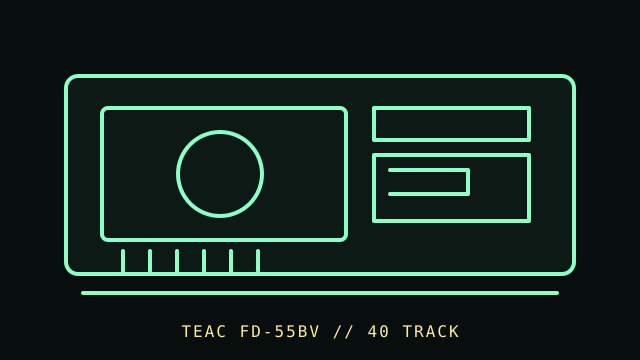

[ FLOPPY DRIVES // IDENTIFIED MODEL ]
TEAC FD-55BV 5.25-inch Drive
TEAC FD-55BV identifies a double-sided, 40-track, 5.25-inch drive variant in the FD-55 family. The exact suffix matters; specifications for another FD-55 submodel must not be substituted.

MODEL IDENTIFICATION: TEAC FD-55BV; match the full suffix and revision to the label and TEAC FD-55BV specification sheet. This record keeps variant-dependent claims qualified; verify the physical unit and applicable manual before connecting, servicing, or formatting media.
Recorded specifications
| Catalog model | TEAC FD-55BV 5.25-inch Drive |
|---|---|
| Device type | Internal 5.25-inch mechanism, 40-track, double-sided per cited specification |
| Interface / connector | Drive-side signals and connector must be confirmed from the exact OEM specification and host-controller manual; do not assume all FD-55 family pinouts/configuration are identical. |
| Media / formats | 5.25-inch double-sided, 40-track media per the cited FD-55BV model specification. Formatted capacity and encoding are controller/software-format dependent; no unqualified KB rating is given. |
| Revision caution | Match full model code, board/ROM/firmware revision, connector, cable, and documentation edition. Family-level ratings and host claims do not automatically apply to every unit. |
Host-controller and format compatibility
- A PC host needs a controller/BIOS and cable arrangement supporting the exact drive configuration; the drive model alone does not guarantee BIOS support.
- TEAC FD-55 submodels differ by track density, sides, speed, and other details. Check the full suffix, jumper/strap state, and manual before attaching or formatting media.
- For legacy host compatibility, controller support, cable twist/drive select, termination, and any density/mode sensing are configuration dependent.
Preservation and safe cleaning
Disconnect drive power and the controller cable before service. Do not insert contaminated or damaged disks. Use TEAC’s exact service documentation for cleaning and alignment; never apply solvent to media or adjust heads without proper alignment tools.
For a disk acquisition, record the physical media label and condition, drive/model/revision, controller, host, software/firmware, settings, and any errors. Keep original media and raw captures/images unchanged; checksum verified copies and document conversions as derivatives.
Primary manuals & standards/archive references
- TEAC FD-55BV Specification — Bitsavers / Internet ArchiveManufacturer specification for FD-55BV double-sided, 40-track model; use exact suffix.
- TEAC FD-55 Drive Maintenance Manual — Internet ArchiveTEAC service guidance for the FD-55 family; verify applicable submodel/revision.
- IBM Personal Computer Technical Reference — BitsaversPeriod IBM PC/AT technical reference for host controller context; exact BIOS/controller support remains configuration-specific.
Source scope is stated per link. Prefer the matching manufacturer manual and revision over family summaries. Capacities and recording modes are omitted when not supported for the exact model and format.